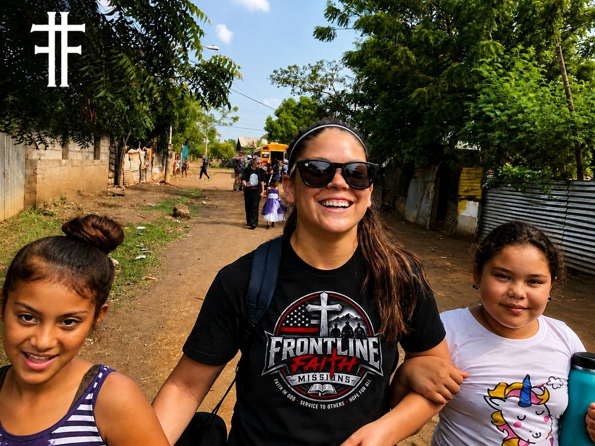
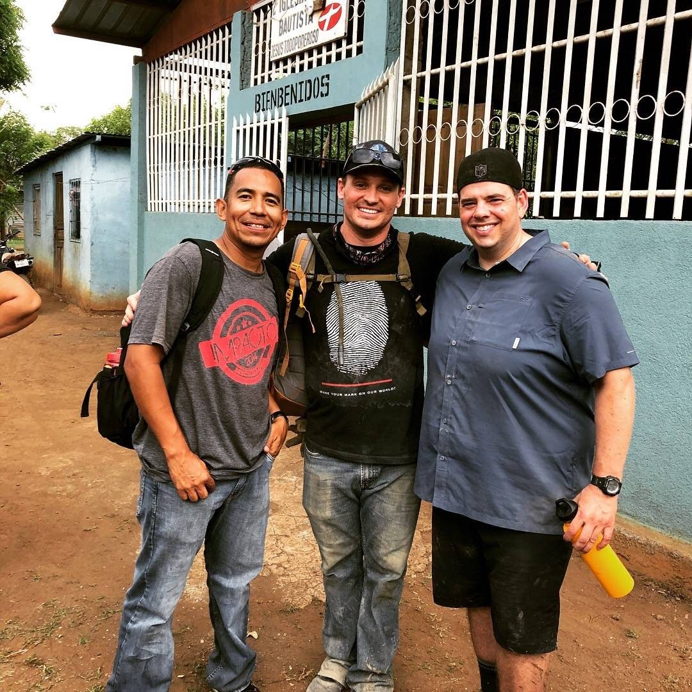
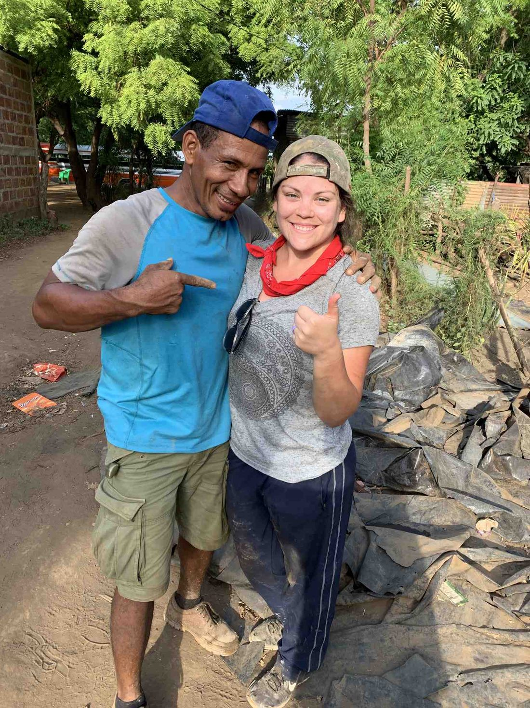
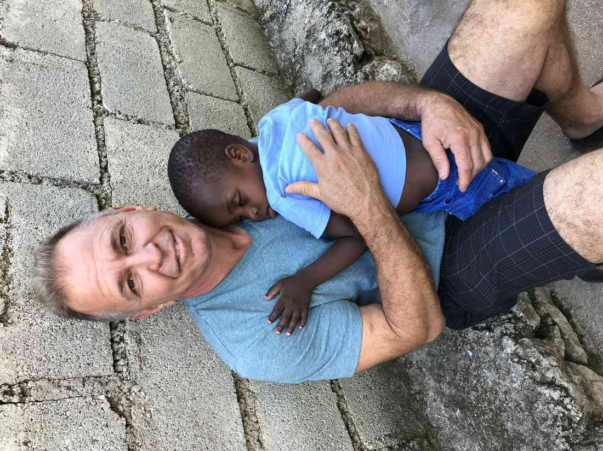
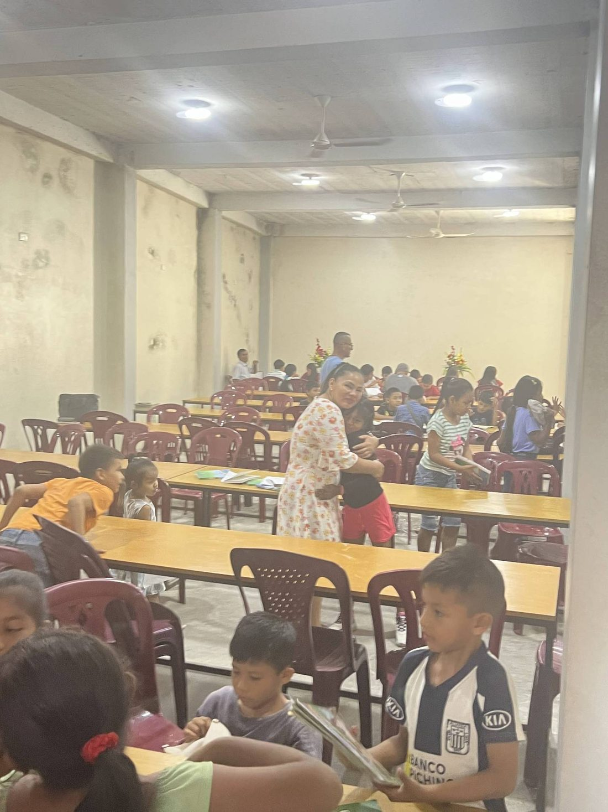
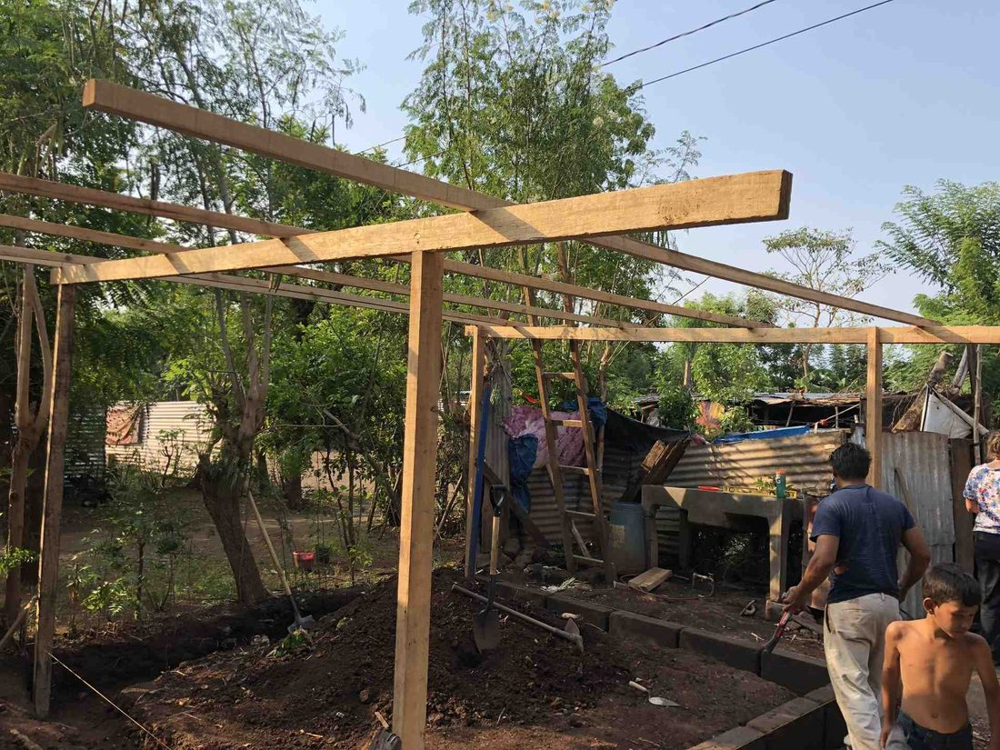
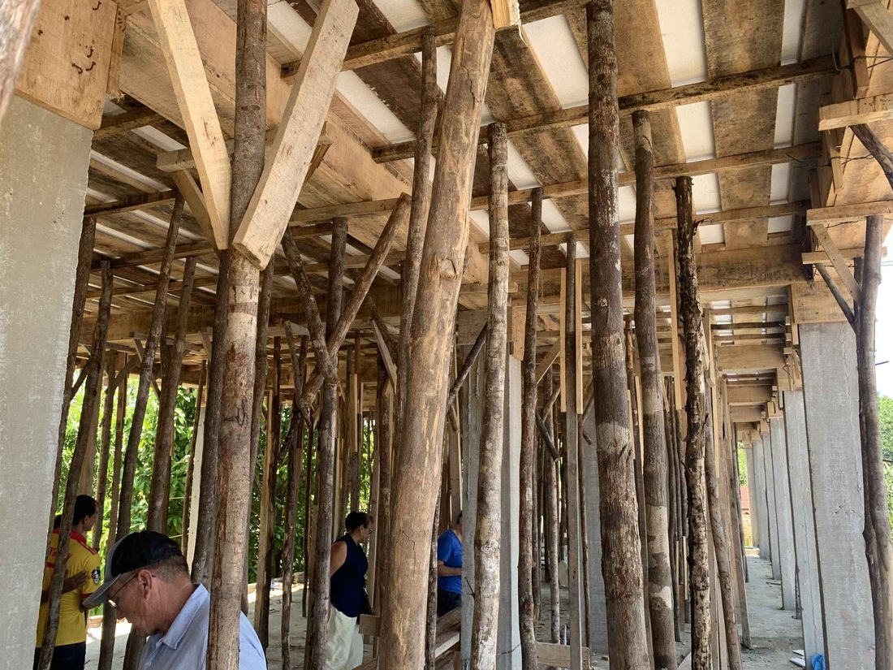
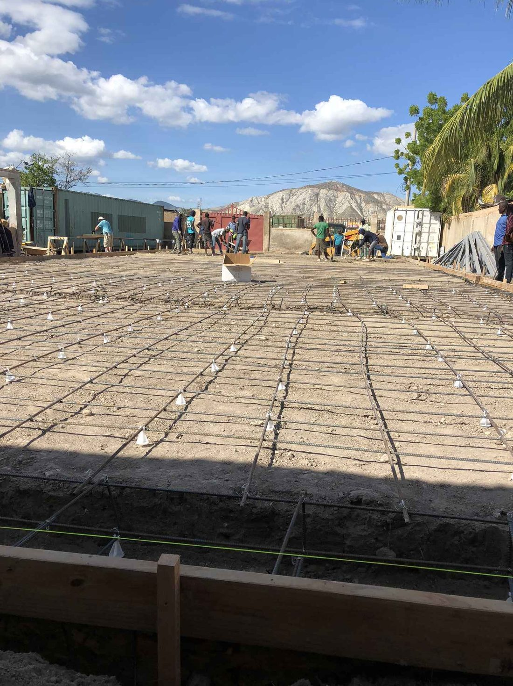

Photos
From the field.
Photographs from past trips — the people we met, the teams who went, and the work in between.











- Every contribution supports practical assistance and faith-centered outreach.
- Monthly giving provides dependable support for ongoing missions.
- We are a 501(c)(3) organization, so your gift is tax deductible.